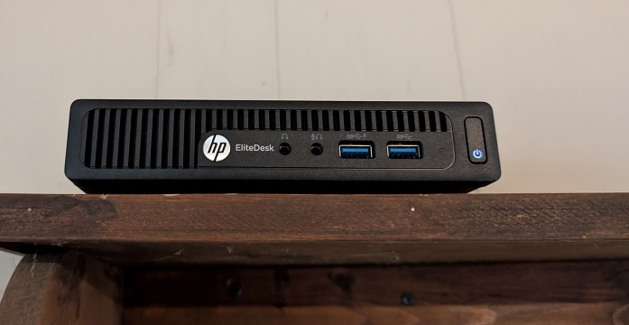

My name is Mark and I have spent the last six years in the United States Air Force.
I have recently separated and am looking to expand my skillset into the digital world!
I have been exploring into HTML for this class and am very excited for CSS and JavaScript!
Some other things I have been exploring into include:
One of the most recent projects I have done regarding networking and operating systems is the addition of a DNS sinkhole.
A DNS(Domain Name System) sinkhole is a cybersecurity measure that redirects DNS requests to a server on your network before reaching a client.
An example of this is advertising. When streaming things like YouTube, Netflix, Disney+, Paramount+, etc. you will recieve ads attempting to sell you an item or service.
Most people find this quite annoying(myself included) and a DNS sinkhole intercepts those ads and blocks them from reaching the device you are streaming from.
Introducing PiHole!!!
PiHole is the DNS sinkhole that you run on a server attached to your network. As the name implies it is designed to be run on a Raspberry Pi and doesn't require much resources.
This is the computer I am running PiHole on.
This computer is a cheap HP Elitedesk 705 G3 mini that was bound for a landfill.
I upgraded the RAM to its maximum of 16GB of DDR4 and installed a 1TB M.2 SSD and now this computer is used to run both my PiHole and game servers for my friends and I.